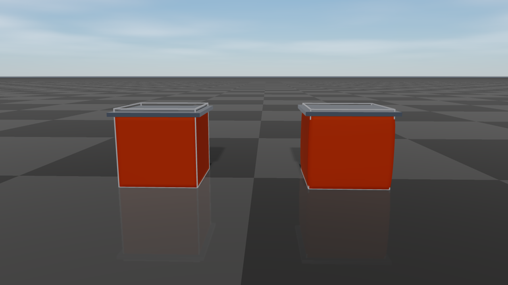

Deformable Objects
raisim::DeformableObject is RaiSim’s XPBD/PBD deformable-body object.
It is intended for fast simulation and data-generation workloads that need
cloth, soft shells, or soft solids without leaving RaiSim’s single-threaded
stepping model.
The object is a set of particles connected by elastic distance constraints
(the mesh edges plus optional extra edges) and, optionally, by bending
constraints between adjacent triangles. With a Young’s modulus, a triangle mesh
is instead a continuous elastic membrane and a tetrahedral mesh a continuous
elastic solid (see Elastic Modulus and Elastic Solids). Each particle
collides as a sphere.
Collision is handled by one aggregate deformable object in the broad phase, with
the particle spheres used internally for contact generation. This keeps
deformable objects cheap to register in the world while still allowing
particle-level contacts against the ground, rigid bodies, articulated systems,
and other deformable objects. Contacts are resolved together with the elastic
forces in every substep (see Contacts), so a body resting on a cloth is
carried by the cloth’s tension, and the elastic response cannot pull particles
through a body. The
deformable_objects example (Server Example: Deformable Objects)
drapes a cloth over a sphere and stacks mesh-based soft cubes.
API Surface
The public constructors are exposed through raisim::World:
World::addDeformableCloth(vertices, triangles, pinnedVertices, material, contactMaterial, collisionGroup, collisionMask)creates a deformable cloth or shell directly from world-space particle positions and triangle indices.World::addDeformableCloth(meshFileInObjFormat, scale, pinnedVertices, material, contactMaterial, collisionGroup, collisionMask)loads an OBJ mesh as a surface cloth/shell and uses its vertices directly as particles.World::addDeformableObject(meshFileInObjFormat, material, options, pinnedVertices, contactMaterial, collisionGroup, collisionMask)loads an OBJ mesh withMeshBuildOptionsfor resampled surface particles, filled particles, and optional internal struts.World::addDeformableVolume(vertices, tetrahedra, pinnedVertices, material, contactMaterial, collisionGroup, collisionMask)creates a solid from world-space particle positions and tetrahedron indices (see Elastic Solids).
Trailing arguments have defaults: scale 1, no pinned vertices, a
default-constructed Material, contact material "default", collision
group 1, and a collision mask that accepts every group.
addDeformableObject always requires its material and build options. All
creation paths register one DeformableObject in the world.
Particle-level operations use local particle indices. Pinned particles report
BodyType::STATIC through getBodyType(localIdx); all other particles
report BodyType::DYNAMIC.
Data Model
The simulated state is particle based:
getNumParticles()returns the number of particles.getPositions()andgetVelocities()return world-space particle positions and velocities.getMass(idx)returns a particle’s mass (infinite for a pinned particle).totalMassis lumped onto the particles by area: each particle carries one third of the area of every triangle it belongs to, so a densely sampled region does not become heavier than a coarse one. A particle on no triangle receives the average share; an object without triangles splits the mass evenly; a filled mesh or a tetrahedral volume lumps it by volume.getTriangles()returns the visual/surface triangle topology.getTetrahedra()returns the tetrahedra of a volume (empty for a surface).getVisualPosition(idx)returns the particle position plus its visual offset. For a closed triangle mesh, construction moves each surface particle inward so that its sphere lies exactlycollisionRadiusbehind every face it belongs to, including along edges and at corners; the collision envelope then matches the input surface, and the visual offset undoes the shift. For an open mesh the offset is zero.getDistanceConstraintCount()andgetBendingConstraintCount()expose the generated constraint counts for diagnostics.getCollisionBodyCount()is normally1because one aggregate collision body represents the deformable object in the broad phase.setPositionOffset(offset)translates all particles, including the positions that pinned particles are held at.applyRigidTransform(translation, rotation)rotates all particles about the world origin and then translates them; velocities and pending forces are rotated as well.
The collision proxy radius is not the visual mesh thickness. It controls the
spherical particle contacts used by the solver. If visual geometry appears to
touch but contacts are weak or delayed, check collisionRadius and particle
spacing before increasing stiffness.
Creating A Deformable Object
Explicit vertices
Use World::addDeformableCloth when you already have particle positions and
surface triangle indices. The vertices are in world coordinates.
std::vector<raisim::Vec<3>> vertices = {
{-0.5, -0.5, 1.0},
{ 0.5, -0.5, 1.0},
{ 0.5, 0.5, 1.0},
{-0.5, 0.5, 1.0}};
std::vector<raisim::DeformableObject::Triangle> triangles = {
{0, 1, 2},
{0, 2, 3}};
raisim::DeformableObject::Material material;
material.totalMass = 1.0;
material.distanceCompliance = 1.0e-5;
material.bendCompliance = 1.0e4; // bending modulus 1e-4 N m, a light fabric
material.damping = 0.001; // s
material.airDrag = 0.5; // 1/s
material.collisionRadius = 0.01;
material.iterations = 6;
auto* cloth = world.addDeformableCloth(vertices, triangles, {}, material);
Mesh surface particles
Use World::addDeformableObject with MeshParticleOptions::Mode::Surface
to resample an OBJ surface. Every triangle is subdivided so that none of its
edges is longer than spacing (default 0.05 m), and the resulting vertices
become the particles; triangles that are already finer keep their original
vertices. To use the OBJ vertices directly without resampling, call
World::addDeformableCloth(meshFile, scale, ...) instead.
raisim::DeformableObject::MeshBuildOptions build;
build.particles.mode = raisim::DeformableObject::MeshParticleOptions::Mode::Surface;
build.particles.scale = 1.0;
auto* shell = world.addDeformableObject("soft_shell.obj", material, build);
shell->setPositionOffset({0.0, 0.0, 1.0});
OBJ polygon faces are triangulated as a fan. Texture and normal indices are ignored. This mode is suitable for cloth and shell meshes.
addDeformableObject raises Material::collisionRadius to at least
0.58 * spacing in both Surface and Filled modes so that neighboring
particle spheres overlap. Pinned-vertex indices passed to
addDeformableObject refer to the generated particle list, not to the
original OBJ vertex numbering.
Filled mesh particles
Use MeshParticleOptions::Mode::Filled for a closed OBJ triangle mesh that
should receive interior particles. RaiSim resamples the surface as in Surface
mode and fills the inside. With a positive youngsModulus the object becomes
an elastic solid: interior particles are placed on a body-centered cubic
lattice with the particle density of a spacing grid, and all particles are
cut into tetrahedra that fill the volume (see Elastic Solids).
Without youngsModulus, the interior particles lie on a regular grid with the
same spacing, and every interior particle is connected by distance
constraints to all particles within \(\sqrt{3}\) spacings: its lattice
neighbors, including the face, edge, and corner diagonals, and the surface
particles around it. The mass is lumped by volume, one lattice cell per interior
particle and a half-cell layer under the surface share of each surface particle.
Such a lattice of springs has no well-defined elastic modulus and no Poisson
effect; use an elastic solid when the material response matters.
raisim::DeformableObject::MeshBuildOptions build;
build.particles.mode = raisim::DeformableObject::MeshParticleOptions::Mode::Filled;
build.particles.scale = 1.0;
build.particles.spacing = 0.05;
build.particles.maxFillParticles = 50000;
auto* softBody = world.addDeformableObject("closed_cube.obj", material, build);
softBody->setPositionOffset({0.0, 0.0, 1.0});
Filled mode requires a closed (watertight) triangle mesh with a meaningful inside/outside volume: interior particles are selected by inside/outside tests against that surface, which are not meaningful for an open mesh.
When using filled mode, tune spacing and maxFillParticles (default
50000) together. Smaller spacing increases particle count and usually improves
shape support, but it also increases contact and constraint cost.
maxFillParticles limits the number of interior particles; if the requested
spacing would exceed it, use a larger spacing or a simpler mesh rather than
raising the limit for an unexpectedly large model.
Internal struts
Internal struts are additional distance constraints used to preserve a rest
shape and provide bounce/recovery for soft shells or filled objects.
PairsWithinRadius connects every particle pair whose rest distance is at
most radius; pairs that already share a constraint are skipped. A large
radius creates many constraints that each cost solver time.
raisim::DeformableObject::MeshBuildOptions build;
build.particles.mode = raisim::DeformableObject::MeshParticleOptions::Mode::Filled;
build.particles.spacing = 0.05;
build.internalStruts.mode =
raisim::DeformableObject::InternalStrutOptions::Mode::PairsWithinRadius;
build.internalStruts.radius = 0.09;
auto* softBody = world.addDeformableObject("closed_cube.obj", material, build);
You can also add constraints after construction:
softBody->addDistanceConstraint(0, 7);
softBody->addDistanceConstraints({{0, 6}, {1, 7}});
softBody->addInternalStruts(build.internalStruts);
Manual constraints are useful for adding diagonal support to coarse shells.
Their rest length is the current distance between the two particles, so add them
immediately after construction or after intentionally placing the object in its
desired rest pose. addDistanceConstraints skips pairs that already have a
constraint; addDistanceConstraint does not check for duplicates.
Material Parameters
DeformableObject::Material controls mass, solver behavior, collision proxy
size, and elastic response. Defaults are shown in parentheses:
totalMass(1 kg): total mass, lumped onto the particles by area (see Data Model).distanceCompliance(-1): XPBD distance compliance.0is rigid; larger values are softer. Negative values preserve legacy behavior by using1 / distanceStiffness, so the default compliance is1e-4.distanceStiffness(1e4): legacy stiffness parameter. PreferdistanceCompliancefor new code.bendCompliance(-1): inverse of the bending modulus \(D\), in 1/(N m) (see Bending).0is rigid; larger values fold more easily. Negative values use1 / bendStiffnesswhenbendStiffnessis positive and otherwise disable bending, so bending is off by default.bendStiffness(0): the bending modulus \(D\) in N m, used whenbendComplianceis negative.youngsModulus(-1, unused): Young’s modulus \(E\) in Pa. If positive, the triangles form an elastic membrane (see Elastic Modulus), or the tetrahedra of a volume an elastic solid (see Elastic Solids), anddistanceComplianceno longer applies to the mesh edges.poissonRatio(0.3): Poisson’s ratio \(\nu\) of the membrane or solid, between -1 and 0.5.thickness(0.01 m): membrane thickness \(t\).crossSectionArea(-1, unused): cross-sectional area of the extra distance constraints (struts and manual constraints) whenyoungsModulusis positive;thickness * Lwhen unset.damping(0 s): stiffness-proportional damping time (see Damping).airDrag(0 1/s): air-drag rate, which damps the absolute particle velocities (see Damping).selfCollision(false): collide the object’s particles with each other (see Contacts).collisionRadius(0.01 m): radius of each internal particle collision proxy.iterations(6): number of constraint projection iterations per substep.substeps(1): number of deformable substeps per RaiSim world step. Deformables whose particles touch step together with the largest value among them.solverMode(XPBD):XPBDorPBD.PBDprojects every constraint rigidly and ignores the compliance magnitudes, so its effective stiffness depends oniterationsand the time step. Whether bending constraints exist is still decided bybendCompliance/bendStiffness.
Elastic Modulus
For engineering-style material input, set youngsModulus instead of
distanceCompliance:
raisim::DeformableObject::Material material;
material.totalMass = 1.0;
material.youngsModulus = 5.0e4;
material.poissonRatio = 0.3;
material.thickness = 0.02;
material.collisionRadius = 0.01;
When youngsModulus > 0, each triangle of the mesh is an element of a thin,
isotropic elastic sheet in plane stress. Its in-plane strain
\(\boldsymbol{\varepsilon} = (\varepsilon_{xx}, \varepsilon_{yy}, \gamma_{xy})\)
is measured after removing the triangle’s rotation, so rigid motion does not
strain it, and it stores the energy
where \(A\) is the rest area of the triangle. A strip of width \(W\)
pulled with a force \(F\) along its length therefore stretches by the strain
\(F / (E t W)\) and narrows by \(\nu\) times that, independently of
how the mesh is triangulated. The mesh edges are not separate springs in this
mode. Extra distance constraints (struts, addDistanceConstraint) remain
springs of compliance \(L / (E A_s)\), with the rest length \(L\) and
the area \(A_s\) = crossSectionArea, or thickness * L when it is
unset.
Without youngsModulus, the mesh edges are springs with
distanceCompliance. Such a spring network has no Poisson effect, and its
stiffness depends on the triangulation.
Elastic Solids
An object made of tetrahedra is an elastic solid when youngsModulus is
positive. Such an object comes from a filled mesh (see
Filled mesh particles) or from a tetrahedral mesh of your own, for example
one generated by a meshing tool:
std::vector<raisim::Vec<3>> vertices = {
{0.0, 0.0, 0.5}, {0.2, 0.0, 0.5}, {0.0, 0.2, 0.5}, {0.0, 0.0, 0.7}};
std::vector<raisim::DeformableObject::Tetrahedron> tetrahedra = {{0, 1, 2, 3}};
raisim::DeformableObject::Material material;
material.totalMass = 0.5;
material.youngsModulus = 2.0e5; // a soft rubber
material.poissonRatio = 0.45;
material.collisionRadius = 0.005;
auto* solid = world.addDeformableVolume(vertices, tetrahedra, {}, material);
Each tetrahedron is an element of an isotropic elastic solid. Its strain \(\boldsymbol{\varepsilon} = (\varepsilon_{xx}, \varepsilon_{yy}, \varepsilon_{zz}, \gamma_{xy}, \gamma_{yz}, \gamma_{zx})\) is measured after removing the element’s rotation, so rigid motion does not strain it, and it stores the energy
where \(V\) is the rest volume of the element and \(\mu = E / (2 (1 + \nu))\) and \(\lambda = E \nu / ((1 + \nu)(1 - 2\nu))\) are the Lamé parameters. A bar of cross section \(A\) pulled with a force \(F\) therefore stretches by the strain \(F / (E A)\) and narrows by \(\nu\) times that, however its volume is cut into tetrahedra; close to \(\nu = 0.5\) the solid is nearly incompressible.


Two filled cubes of soft rubber (\(E\) = 20 kPa) under the same 15 kg plate; the wire frames show their rest shape. With \(\nu = 0\) (left) the cube only shortens. With \(\nu = 0.45\) (right) it bulges sideways as it shortens, keeping its volume.
A spinning solid keeps its shape, and a solid crushed until some elements turn inside out recovers its rest shape once released. Each particle carries a quarter of the volume of every tetrahedron it belongs to.
The solid has the shape of its mesh. Its surface particles sit
collisionRadius inside the surface, like those of any closed mesh, so that
their collision spheres reproduce it, but the elastic body is the full volume of
the mesh: a cube of side \(L\) resting on the ground shortens under its own
weight by \(\rho g L^2 / (2E)\), whatever its particle spacing and collision
radius. Volume changes are resisted over the neighborhood of every particle
rather than tetrahedron by tetrahedron, so a nearly incompressible solid still
bends: a rubber beam with \(\nu = 0.49\) deflects about as far as one with
\(\nu = 0.3\). A coarse mesh of tetrahedra is still stiffer in bending than
the material it approximates; with two elements across a beam it deflects about
two thirds of the beam-theory value, with four about nine tenths, so use several
elements across thin parts. The faces that belong to a single tetrahedron are the
surface that getTriangles() returns for a volume created with
addDeformableVolume. Without youngsModulus, the edges of the tetrahedra
are distance constraints with distanceCompliance.
Bending
With bending enabled, every pair of triangles sharing an edge resists the change of its curvature from the rest shape. Summed over the surface, the bending energy approximates that of a thin plate,
where \(H\) is the mean curvature, \(H_0\) its rest value, and
\(D\) the bending modulus set by bendCompliance \(= 1/D\). The
energy is quadratic in the curvature change, so the bending moment is linear in
it: a cantilevered strip under eight times the load sags eight times as far
while the deflection stays small. For an isotropic sheet of thickness
\(t\),
Woven cloth bends far more easily than this formula predicts from its in-plane stiffness, because its fibers slide against each other, so cloth is usually given a much smaller \(D\). The rest curvature \(H_0\) comes from the mesh as it is created, so closed shells and curved panels keep their shape; only a flat rest mesh is flat at rest.
Damping
Two damping terms are available. Together they form Rayleigh damping:
airDrag\(c\) (1/s) acts on the absolute velocity of every particle, like a linear air drag. A free particle under gravity approaches the terminal speed \(\|\boldsymbol{g}\| / c\), and the decay \(e^{-c t}\) is independent ofΔtandsubsteps. It damps rigid motion too, for example a cloth swinging from its pins.damping\(\beta\) (s) acts on the deformation only. Every distance and bending constraint, and every strain of a membrane or solid element, resists its rate of change with a viscous force equal to \(\beta\) times its elastic stiffness, so a vibration mode of angular frequency \(\omega\) decays with the damping ratio \(\zeta = \beta \omega / 2\): stiff, fast modes are damped strongly and slow, large-scale motion only weakly. Translation and rotation of the whole object are not damped. A rigid constraint (zero compliance) loses its whole rate of change.dampinghas no effect in thePBDsolver mode.
Both default to zero; the remaining dissipation comes from the implicit time integration and from contact friction.
Note
Earlier versions interpreted damping as the fraction of every particle’s
velocity removed per world step, which slowed rigid motion as well and
changed with the time step (it capped free fall at about 0.5 m/s at
Δt = 1 ms with the old default of 0.02). To reproduce a former value
\(d\) used at time step \(\Delta t\), set
airDrag \(= -\ln(1 - d) / \Delta t\) and damping to zero.
Contacts
A deformable particle collides as a sphere of radius collisionRadius.
Contacts with rigid bodies, articulated systems, and terrain are resolved in
every substep together with the elastic constraints, as one-sided contacts
between the particle and the body surface:
The contact force acts on the body as well, through its apparent inertia at the contact point, so momentum is exchanged in both directions and a body resting on a cloth is carried by the cloth’s tension.
The elastic response cannot push or pull a particle through a body.
Contacts are inelastic and use Coulomb friction with the friction coefficient of the contact materials.
With
selfCollisionenabled, the particles of one object collide with each other too, so that a folded cloth rests on itself. Particle pairs that already overlap in the rest shape (neighbors of a coarse surface) are left to the elastic constraints. The friction coefficient is that of the object’s contact material with itself.Contacts that a particle can reach within the step are created in advance, so a fast particle stops at the surface in the step it arrives instead of penetrating. These contacts report a positive
Contact::getDepth()(a gap) and zero impulse until the particle touches the body. A pinned particle only takes part in contacts once it touches.
Contacts between particles of different deformable objects are resolved the
same way, in a substep loop that the touching objects share, so stacked soft
bodies support each other. Touching deformables step with the largest
substeps among them.
Contact::getImpulse() reports the full impulse exchanged in the step, on
both sides of the contact. Contacts between particles of the same object
(selfCollision) are not listed in getContacts().
A heavy object on a light cloth, such as a 2 kg ball on a 0.2 kg cloth, needs
enough iterations and substeps for the cloth to carry the load: with too
few, the cloth stretches far beyond its compliance under the load, and a stretch
large enough to open the gaps between the particle spheres lets the object
through.
Sleeping
With sleeping enabled, a deformable object sleeps only when every particle has been slower than the linear sleep threshold for the required number of steps. Applying a force, moving or transforming the object, pinning or unpinning a particle, or adding constraints wakes it up.
Pinned Vertices And Forces
Pinned vertices are fixed in world coordinates, have infinite mass, and are
exposed to collision as static proxies. They can be specified at construction
time or changed later; pinVertex holds the particle at its current
position:
cloth->pinVertex(0);
cloth->unpinVertex(0, 0.01);
unpinVertex(idx, mass) restores a finite, positive mass for that particle.
Use a mass consistent with the surrounding particles (getMass() of a
neighbor). Constraint corrections are distributed in proportion to
inverse mass: a much lighter particle absorbs most of each correction and
reacts strongly to forces, while a much heavier one barely moves and drags its
neighbors as if it were nearly pinned.
External forces can be applied per particle with the standard Object
interface. They act on the next step only, and calls on pinned particles are
ignored. Particles have no rotational state, so setExternalTorque has no
effect:
softBody->setExternalForce(3, {0.0, 0.0, 2.0});
softBody->clearExternalForcesAndTorques();
Solver Tuning
Start with the largest stable time step your application needs, then tune in this order:
Choose a particle spacing that resolves the shape at the level your task actually observes.
Set
collisionRadiusso neighboring particle proxies cover the surface without making the visual mesh appear inflated.Increase
iterationsuntil distance constraints converge enough for the task.Increase
substepswhen heavy objects stretch the material too much or contacts are jittery. Several substeps with few iterations each usually converge better than one substep with many iterations.Reduce
distanceComplianceor increaseyoungsModulusonly after the discretization and solver budget are reasonable.
XPBD is the recommended default because its compliance gives a material
stiffness that depends far less on the iteration count and time step than
PBD, where stiffness is only a by-product of how many rigid projections are
performed. Use PBD mainly for backward-compatible behavior or controlled
comparisons.
Common failure modes:
Exploding or jittering contacts usually mean the time step is too large for the stiffness/contact radius combination.
A cloth that stretches too much needs lower
distanceComplianceor more iterations.A cloth that folds too easily needs bending constraints (a nonnegative
bendCompliance; bending is off by default) and then a lowerbendCompliance.A cloth that keeps flapping or swinging needs
airDrag; vibrations of a stiff material needdamping.Filled objects that collapse need a
youngsModulus(an elastic solid), or more internal struts, smaller spacing, or higher stiffness.
Rayrai Visualization
A local RayraiWindow draws deformable objects in its world automatically.
RaisimServer serializes them as dynamic Shape::Mesh visuals for the
Rayrai TCP viewer. The first visualizer packet sends the object name, triangle
topology, and current vertex positions. Later packets stream updated vertex
positions and resend the triangle list only if the topology changes. Rayrai
rebuilds the custom OpenGL mesh, recomputes normals from the triangle list, and
renders the deformable surface in world coordinates. Both paths draw the
vertices at getVisualPosition().
The particle collision proxies are an internal physics representation and are
not rendered as one sphere per vertex. For an open cloth, the drawn surface
passes through the particle centers, so the collision envelope extends about
collisionRadius to either side of it. For a closed mesh, the inward particle
shift and the visual offset make the drawn surface approximately coincide with
the collision envelope; the offsets turn with the object’s overall rotation, so
the drawn surface stays outside the particles of a tumbling soft body. For stacked soft cubes or other closed shapes, choose
particle spacing and collisionRadius together: neighboring particle spheres
should cover the surface without leaving gaps, but the radius should stay small
relative to the object’s features.
World XML
World::exportToXml writes each deformable object as a <deformable>
object with its material, contact material, collision group and mask, every
particle’s position, rest position, velocity, visual offset, inverse mass, and
pinned flag, the triangle list, the tetrahedra of a volume, and the distance
constraints. Loading the file with raisim::World(path) recreates the object;
bending constraints, membrane and solid elements are rebuilt from the triangles,
tetrahedra, rest positions, and material, and a solid continues in the pose it
was saved in. The element layout is intended for
this export/import round trip; the loader requires the attributes that the
exporter writes.
Limitations
This is still an experimental implementation. It does not include topology
changes such as tearing or cutting.
Granular systems do not collide with deformable objects. A rigid edge or corner
can still pass between particle spheres when collisionRadius is small
compared with the particle spacing.
API Reference
-
class DeformableObject : public raisim::Object
A position-based (XPBD/PBD) deformable body made of particles connected by distance constraints (mesh edges plus optional extra edges) and, for cloth, bending constraints between adjacent triangles. With a Young’s modulus, triangle meshes are elastic membranes and tetrahedral meshes elastic solids. Create it with World::addDeformableCloth(), World::addDeformableObject() or World::addDeformableVolume(). Each particle collides as a sphere of radius Material::collisionRadius.
localIdxis a particle index. For closed meshes, particles are shifted inward by the collision radius so that the collision surface matches the input mesh; getVisualPosition() returns the unshifted position.Contacts with rigid bodies, articulated systems and terrain are solved inside the deformable’s own substep loop, together with its elastic constraints: the elastic projection cannot pull a particle through a body, and every contact impulse also acts on the (dynamic) body through its apparent inertia at the contact point. These contacts are inelastic, use Coulomb friction, and include speculative ones (Contact::getDepth() > 0) for particles that may reach a body during the step. Contacts between two deformables are solved by the world’s contact solver.
Public Types
-
enum class SolverMode
Constraint projection scheme.
Values:
-
enumerator XPBD
Extended PBD: uses the compliance parameters (time-step independent stiffness).
-
enumerator PBD
Plain PBD: constraints are projected rigidly (compliance is ignored).
-
enumerator XPBD
-
using Triangle = std::array<unsigned int, 3>
Vertex indices of a triangle.
-
using DistanceEdge = std::array<unsigned int, 2>
Particle indices of a distance constraint.
-
using Tetrahedron = std::array<unsigned int, 4>
Vertex indices of a tetrahedron.
Public Functions
-
DeformableObject(const std::vector<Vec<3>> &vertices, const std::vector<Triangle> &triangles, const std::vector<unsigned int> &pinnedVertices, const Material &material, const std::vector<DistanceEdge> &extraDistanceEdges = {})
- Parameters:
vertices – [in] particle positions in the world frame (m); at least one
triangles – [in] mesh triangles (used for distance and bending constraints and visualization)
pinnedVertices – [in] indices of particles held fixed at their initial positions
material – [in] material and solver parameters
extraDistanceEdges – [in] additional distance constraints (duplicates of mesh edges are skipped)
-
~DeformableObject() override
out-of-line so that the member vectors, which the library allocates, are also destroyed in the library translation unit
-
inline virtual ObjectType getObjectType() const final
- Returns:
DEFORMABLE.
-
virtual double getMass(size_t localIdx) const final
- Parameters:
localIdx – [in] particle index
- Returns:
the particle mass (kg); infinity for pinned particles
-
virtual BodyType getBodyType(size_t localIdx) const final
- Parameters:
localIdx – [in] particle index
- Returns:
STATIC for pinned particles, DYNAMIC otherwise
-
virtual void updateCollision() final
Internal: synchronizes the collision geometry with the current pose.
-
virtual void updateContactAabbs() final
Internal: recomputes the world-frame AABBs used by the broadphase.
-
virtual void preContactSolverUpdate1(const Vec<3> &gravity, double dt) final
Internal: first per-step update before the contact solver (called by World).
- Parameters:
gravity – [in] gravitational acceleration (m/s^2)
dt – [in] time step (s)
-
virtual void preContactSolverUpdate2(const Vec<3> &gravity, double dt, contact::ContactProblems &problems) final
Internal: second per-step update before the contact solver (called by World).
- Parameters:
gravity – [in] gravitational acceleration (m/s^2)
dt – [in] time step (s)
problems – [inout] contact problems of the world
-
virtual void integrate(double dt, class World &world) final
Internal: integrates the state after the contact solve (called by World).
- Parameters:
dt – [in] time step (s)
world – [in] the owning world
-
virtual void setExternalForce(size_t localIdx, const Vec<3> &force) final
apply forces at the Center of Mass
- Parameters:
localIdx – [in] local body index
force – [in] force in the world frame (N)
-
virtual void setExternalTorque(size_t localIdx, const Vec<3> &torque) final
Particles have no rotational state; this call is ignored.
- Parameters:
localIdx – [in] unused
torque – [in] unused
-
virtual void setExternalForce(size_t localIdx, const Vec<3> &pos, const Vec<3> &force) final
Same as setExternalForce(size_t, const Vec<3>&): the force acts on the particle and
posis only recorded for visualization.- Parameters:
localIdx – [in] particle index
pos – [in] application point (recorded only)
force – [in] force in the world frame (N)
-
virtual void setConstraintForce(size_t localIdx, const Vec<3> &pos, const Vec<3> &force) final
Internal: apply a constraint force (expressed in the world frame) at specific location of the body (expressed in the body frame). Unlike setExternalForce(), it is not visualized.
- Parameters:
localIdx – [in] local body index
pos – [in] application point in the body frame
force – [in] force in the world frame (N)
-
virtual void clearExternalForcesAndTorques() final
Remove all external forces set for the next step.
-
virtual void getPosition(size_t localIdx, Vec<3> &pos_w) const final
get the position of a local body (its body frame origin) or particle.
- Parameters:
localIdx – [in] local body (or particle) index
pos_w – [out] position in the world frame (m)
-
virtual void getVelocity(size_t localIdx, Vec<3> &vel_w) const final
get the linear velocity of a local body or particle.
- Parameters:
localIdx – [in] local body (or particle) index
vel_w – [out] linear velocity in the world frame (m/s)
-
virtual void getOrientation(size_t localIdx, Mat<3, 3> &rot) const final
Particles have no orientation state:
rotis always the identity.- Parameters:
localIdx – [in] unused
rot – [out] identity
-
virtual void getPosition(size_t localIdx, const Vec<3> &pos_b, Vec<3> &pos_w) const final
- Parameters:
localIdx – [in] particle index
pos_b – [in] offset from the particle (world-aligned)
pos_w – [out] particle position + pos_b
-
virtual void getVelocity(size_t localIdx, const Vec<3> &pos_b, Vec<3> &vel_w) const final
Returns the particle velocity;
pos_bis ignored.- Parameters:
localIdx – [in] particle index
pos_b – [in] ignored
vel_w – [out] velocity in the world frame (m/s)
-
virtual void getContactPointVel(size_t pointId, Vec<3> &vel) const final
get the contact point velocity used by the contact solver (the velocity being solved for, not the state before the step). For single bodies, articulated systems and deformable objects, it is expressed in the contact frame (z is the contact normal).
- Parameters:
pointId – [in] the contact index. This is an index of a contact in the contact vector that you can retrieve from getContacts().
vel – [out] the contact point velocity
-
inline size_t getNumParticles() const
- Returns:
the number of particles.
-
inline const std::vector<Vec<3>> &getPositions() const
- Returns:
particle (collision) positions in the world frame (m).
-
inline const std::vector<Vec<3>> &getVelocities() const
- Returns:
particle velocities in the world frame (m/s).
-
inline const std::vector<Triangle> &getTriangles() const
- Returns:
the mesh triangles (the surface, for a tetrahedral volume).
-
inline const std::vector<Tetrahedron> &getTetrahedra() const
- Returns:
the tetrahedra of a volume (empty for a surface).
-
Vec<3> getVisualPosition(size_t idx) const
- Parameters:
idx – [in] particle index
- Returns:
the particle position without the inward collision-radius shift applied to closed meshes (m)
-
inline size_t getDistanceConstraintCount() const
- Returns:
the number of distance constraints.
-
size_t getBendingConstraintCount() const
- Returns:
the number of bending constraints.
-
CollisionBodyHandlePtr getCollisionBodyAt(size_t idx)
Internal: the collision body used for broadphase registration.
- Parameters:
idx – [in] must be 0
- Returns:
the collision body, or nullptr if
idxis not 0 or the object was removed
-
inline size_t getCollisionBodyCount() const
- Returns:
1 while the object is in a world, 0 after removal.
-
void setPositionOffset(const Vec<3> &offset)
Translate all particles (including pinned rest positions).
- Parameters:
offset – [in] translation in the world frame (m)
-
void applyRigidTransform(const Vec<3> &translation, const Mat<3, 3> &rotation)
Rotate all particles about the world origin, then translate them. Velocities and pending forces are rotated too.
- Parameters:
translation – [in] translation in the world frame (m)
rotation – [in] rotation matrix
-
void pinVertex(size_t idx)
Pin a particle at its current position (infinite mass).
- Parameters:
idx – [in] particle index
-
void unpinVertex(size_t idx, double mass)
Release a pinned particle.
- Parameters:
idx – [in] particle index
mass – [in] new particle mass (kg), positive
-
void addDistanceConstraint(unsigned int i, unsigned int j)
Add a distance constraint whose rest length is the current distance between the two particles. Ignored if i == j.
- Parameters:
i – [in] first particle index
j – [in] second particle index
-
void addDistanceConstraints(const std::vector<DistanceEdge> &edges)
Add distance constraints (see addDistanceConstraint()), skipping pairs that already have one.
- Parameters:
edges – [in] particle index pairs
-
void addInternalStruts(const InternalStrutOptions &options)
Add strut constraints computed from the rest positions.
- Parameters:
options – [in] strut options
Public Static Functions
-
static DeformableObject *loadObj(const std::string &fileName, double scale, const std::vector<unsigned int> &pinnedVertices, const Material &material)
Create a deformable from an OBJ mesh using its vertices as particles.
- Parameters:
fileName – [in] OBJ file
scale – [in] uniform scale applied to the vertices
pinnedVertices – [in] indices of pinned particles
material – [in] material and solver parameters
- Returns:
a new object allocated with new; the caller owns it unless it is handed to a World
-
static DeformableObject *createVolume(const std::vector<Vec<3>> &vertices, const std::vector<Tetrahedron> &tetrahedra, const std::vector<unsigned int> &pinnedVertices, const Material &material)
Create an elastic solid from a tetrahedral mesh. Its surface (the faces that belong to one tetrahedron) is used for visualization, and the particles on it are shifted inward by the collision radius like those of a closed triangle mesh (see the class description). The mass is lumped by volume. With a positive Material::youngsModulus the tetrahedra are elastic solid elements; otherwise their edges are distance constraints.
- Parameters:
vertices – [in] particle positions in the world frame (m)
tetrahedra – [in] vertex indices of the tetrahedra (either orientation)
pinnedVertices – [in] indices of particles held fixed at their initial positions
material – [in] material and solver parameters
- Returns:
a new object allocated with new; the caller owns it unless it is handed to a World
-
static DeformableObject *loadObj(const std::string &fileName, const std::vector<unsigned int> &pinnedVertices, const Material &material, const MeshBuildOptions &options)
Create a deformable from an OBJ mesh with resampled (and optionally filled) particles and optional struts.
- Parameters:
fileName – [in] OBJ file
pinnedVertices – [in] indices of pinned particles (in the generated particle list)
material – [in] material and solver parameters
options – [in] particle and strut generation options
- Returns:
a new object allocated with new; the caller owns it unless it is handed to a World
-
struct Material
Material and solver parameters.
Public Members
-
double totalMass
Total mass (kg). Positive. It is lumped onto the particles in proportion to the triangle area around each particle (one third of every incident triangle); a particle that belongs to no triangle receives the average share. Objects without triangles split it evenly, and filled meshes lump it by volume (see MeshParticleOptions::Mode::Filled).
-
double distanceCompliance
XPBD distance compliance. 0 is rigid, larger values are softer. Negative keeps backwards compatibility by using 1 / distanceStiffness.
-
double distanceStiffness
Legacy stiffness parameter. Prefer distanceCompliance for new code.
-
double bendCompliance
Bending compliance (1/(N m)): the inverse of the bending modulus D of the surface. 0 is rigid, larger values fold more easily. Negative disables bending unless bendStiffness is positive. For an isotropic plate of thickness t, D = youngsModulus * t^3 / (12 (1 - poissonRatio^2)). The bending energy is quadratic in the curvature change from the rest shape, so curved rest shapes (shells, closed meshes) keep their shape.
-
double bendStiffness
Bending modulus D (N m), used as 1 / bendCompliance when bendCompliance is negative. A positive value enables automatic adjacent-triangle bending constraints.
-
double youngsModulus
Young’s modulus in Pa. If positive, the mesh is a continuous isotropic elastic material with this modulus and poissonRatio (co-rotated linear elasticity: linear elasticity in a frame that rotates with the material), in place of the mesh-edge distance constraints and distanceCompliance. An object with tetrahedra (World::addDeformableVolume(), or a filled mesh, see MeshParticleOptions::Mode::Filled) is an elastic solid; otherwise the triangles form a membrane of the given thickness (plane stress). The extra distance constraints (struts, addDistanceConstraint()) get the compliance L / (E A) with the cross-sectional area A.
-
double poissonRatio
Poisson’s ratio of the membrane or solid (see youngsModulus), in (-1, 0.5). Close to 0.5 a solid is nearly incompressible.
-
double thickness
Membrane thickness (m), and the default cross-sectional area thickness * L of the extra distance constraints.
-
double crossSectionArea
Cross-sectional area of the extra distance constraints. If positive, it overrides thickness * L.
-
double damping
Stiffness-proportional (Rayleigh) damping time (s), nonnegative. Every distance and bending constraint resists its rate of change with a viscous force equal to damping times its elastic stiffness (integrated implicitly), so a vibration mode of angular frequency w gets the damping ratio damping * w / 2: fast, stiff modes are damped more than slow ones. A rigid constraint (zero compliance) loses its whole rate. Rigid motion is not damped. Ignored in the PBD solver mode. Use airDrag for mass-proportional damping.
-
double airDrag
Air drag rate (1/s), nonnegative. Every particle velocity decays as exp(-airDrag * t), so a free particle under gravity g approaches the terminal speed |g| / airDrag. 0 disables drag.
-
double collisionRadius
Collision sphere radius of each particle (m). Positive.
-
int iterations
Constraint solver iterations per substep (nonnegative).
-
int substeps
Substeps per world step (positive). Deformables whose particles touch step together, with the largest substep count among them.
-
SolverMode solverMode
Constraint projection scheme.
-
bool selfCollision
Collide the particles of this object with each other, except pairs that already overlap in the rest shape, so that a folded cloth rests on itself. Costs a neighbor search every step.
-
double totalMass
-
struct InternalStrutOptions
Extra distance constraints between interior/surface particles to make volumes stiffer.
Public Types
-
struct MeshParticleOptions
How particles are generated from an OBJ mesh (see loadObj(const std::string&, const std::vector<unsigned int>&, const Material&, const MeshBuildOptions&)).
Public Types
-
enum class Mode
Particle generation mode.
Values:
-
enumerator Filled
Surface resampling plus interior particles (requires a closed mesh), with the mass lumped by volume. With a positive Material::youngsModulus the particles are tetrahedralized and the object is an elastic solid (the interior particles lie on a body-centered cubic lattice). Otherwise the interior particles lie on a regular grid and every one of them is connected to all particles within sqrt(3) * spacing (its lattice neighbors and the nearby surface particles) by distance constraints.
-
enumerator Filled
-
enum class Mode
-
struct MeshBuildOptions
Options for building a deformable from an OBJ mesh.
Public Members
-
MeshParticleOptions particles
Particle generation options. Material::collisionRadius is raised to at least 0.58 * spacing.
-
InternalStrutOptions internalStruts
Extra strut constraints.
-
MeshParticleOptions particles
-
enum class SolverMode